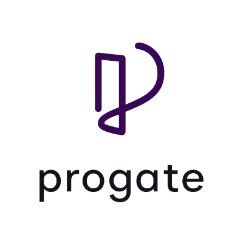
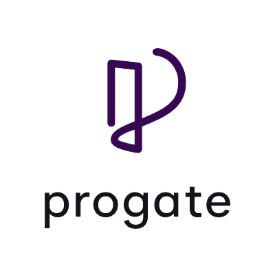

Pilihan Pekerjaan
Pengembang Aplikasi
Membuat, memelihara, dan meningkatkan program komputer untuk keperluan bisnis.
300 Lowongan tersedia
Pendidikan
Mengajar, membimbing, dan mengevaluasi hasil belajar siswa dalam lingkungan pendidikan formal atau nonformal.
140 Lowongan tersedia
Telekomunikasi
Merancang, membangun, dan memelihara jaringan komunikasi untuk menghubungkan orang dan perangkat.
110 Lowongan tersedia
Manufaktur
Menghasilkan barang melalui proses produksi dengan menggunakan mesin, tenaga kerja, dan bahan baku.
200 Lowongan tersedia